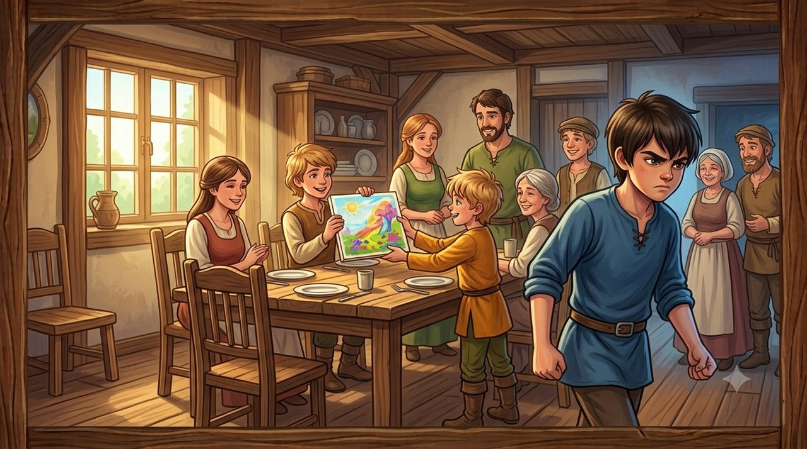
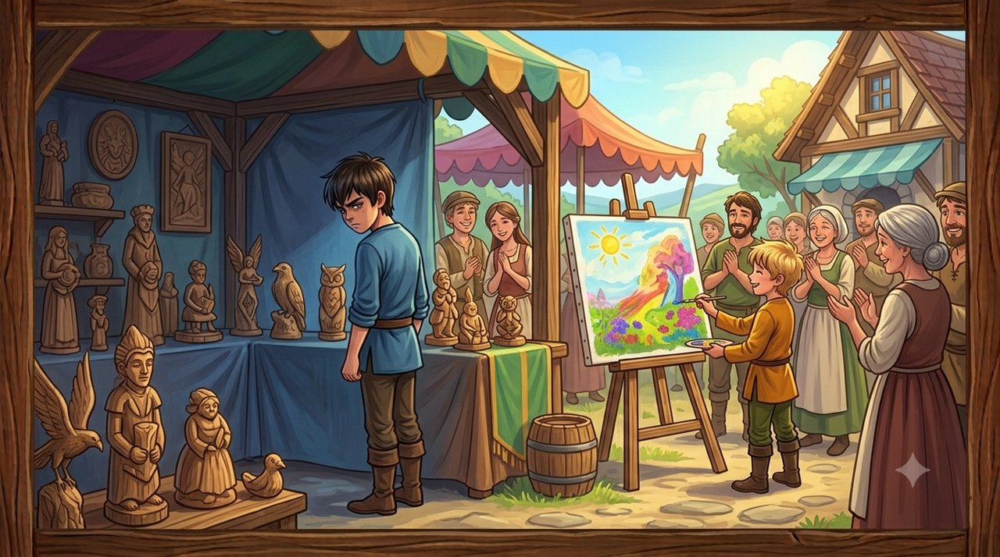
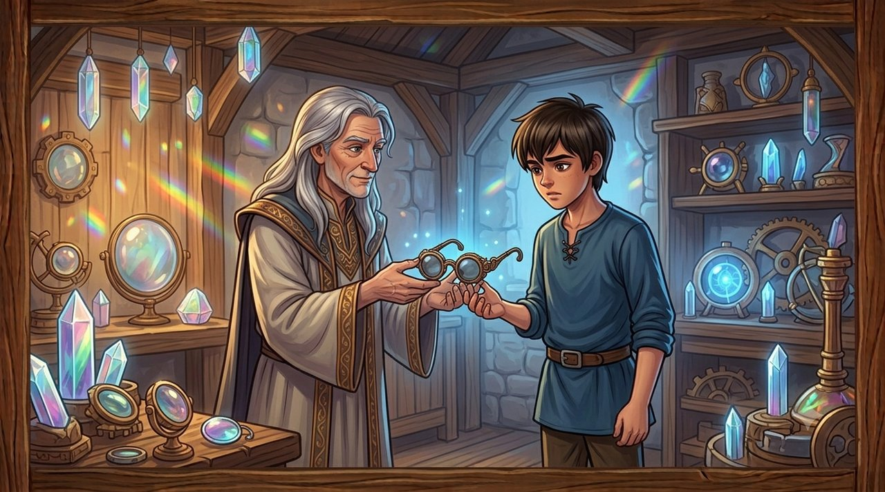
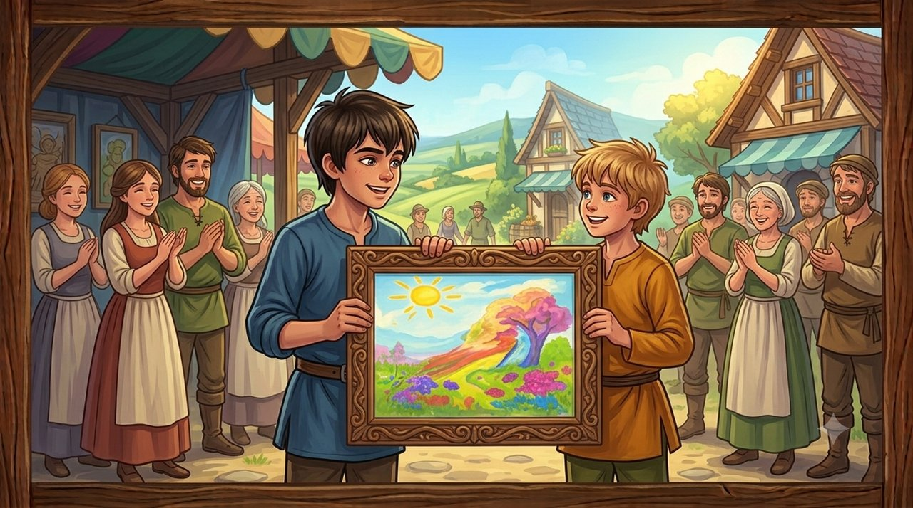

בכפר האוּמנים טל־אור, מוקף שדות חיטה ירוקים וסדנאות יצירה, חי נער חרוץ ורגיש בשם איתמר. איתמר היה מפסל בעץ בדיוק מופלא, אך בליבו רחשה תמיד מועקה שקטה: אחיו הצעיר, יונתן, ניחן בכישרון ציור ססגוני ובחיוך כובש שמשך אליו אנשים בקלות. בכל פעם שיונתן קיבל תשומת לב, מחמאה או פרס, איתמר לא הצליח לראות את ההצלחה כפשוטה – היא הרגישה לו כמו הוכחה ניצחת לכך שהוא עצמו פחות שווה.
המנגנון המעוות: ראיית ערך עצמי דרך הצלחת האחר
איתמר פיתח מנגנון של פילטר שלילי והשוואה פוגענית, שגרם לו לפרש כל רגע של שמחה בבית כאיום ישיר על מקומו:
יונתן מציג ציור חדש בערב שבת ומקבל שבחים מהמשפחה — ואיתמר שומע רק דבר אחד: "כולם מתפעלים ממנו כי הפיסול שלי לא מעניין אף אחד". וכך: גיחוך מזלזל, הערה עוקצנית על "חוסר דיוק בקווים" ונטישת השולחן בכעס.
ההורים קונים ליונתן סט מכחולים חדש לכבוד יום הולדתו — ואיתמר מסיק: "הם משקיעים רק בו ורואים רק את הצרכים שלו". וכך: שתיקה זועמת, סגירת דלת החדר והאשמת ההורים באי־צדק ובהפליה.
יונתן מבקש להתייעץ עם איתמר כיצד לגלף מסגרת לציור — ואיתמר קורא בזה מחשבה שלא נאמרה: "הוא רק מנסה להתנשא מעליי ולהראות שהוא יכול לעשות גם את מה שאני עושה". וכך: דחייה תוקפנית — "תסתדר לבד, אל תיגע בחומרים שלי!"
המשבר וקריסת המבצר

לקראת יריד האביב השנתי של הכפר, הוזמנו שני האחים להציג את עבודותיהם בביתן המשפחתי המשותף. כשראה איתמר שיונתן סיים ציור נוף מרהיב שמשך מבטים רבים מתושבי הכפר, תחושת הקנאה הפכה לצריבה חונקת. מתוך דחף פנימי שאינו נשלט, הסתיר איתמר את הציור של אחיו מאחורי ארגזי עץ ישנים כדי שאיש לא יבחין בו.
כשהתגלה הדבר, הביתן לא הוצף בריב סוער כפי שאיתמר ציפה, אלא בשקט כבד וכואב. יונתן הביט בו בעיניים דומעות ולא הבין מדוע אחיו הבכור, שהיה מודל לחיקוי עבורו, רוצה ברעתו. ההורים עמדו חסרי אונים, ואיתמר מצא את עצמו עומד לבד בביתן הנטוש. הפסלים שלו היו מושלמים ומלוטשים, אך איש לא שמח לשהות לצידו. תחושת הבדידות הייתה קרה וכבדה מנשוא.
המפגש עם החכם והמטפורה

איתמר ברח לפאתי הכפר, אל סדנת המראות של אלקנה, זקן חכמי האומנים. אלקנה הביט בנער הנסער, לא גער בו ולא שפט אותו, אלא שלף מתיק עור ישן זוג משקפי צללים בעלי עדשות עכורות.
"הרכב אותם, איתמר," אמר אלקנה ברכות.
איתמר הרכיב את המשקפיים והביט סביבו. כל חפץ מואר בסדנה נראה לפתע אפרורי, ואילו הצללים הכהים נראו ענקיים ומאיימים. כשאלקנה הניח מולו אבן יקרה ונוצצת, נראתה האבן דרך העדשות כמו גוש פחם חסר ערך.
"אלו הם משקפי הקנאה," הסביר אלקנה. "הם גורמים לך להאמין שאורו של אדם אחר יוצר צל שמחשיך אותך. כשהרכבת את המשקפיים האלה, כל מחמאה שיונתן קיבל נראתה לך כגזילת האור שלך. אך ראה מה קורה כשאתה מסיר אותם."
איתמר הסיר את המשקפיים. האור בסדנה חזר לזהור, והאבן הנוצצת שבה לנצנץ במלוא יופייה מבלי להפחית מיופיו של שום חפץ אחר בחדר.
"הכישרון והאור של יונתן אינם לוקחים ממך מאומה," הוסיף אלקנה. "העולם אינו מאגר מוגבל של הערכה. יש מקום בשמיים לכל הכוכבים לזרוח יחד מבלי להסתיר זה את זה."
תובנה וריפוי

המילים פקחו את עיניו של איתמר. הוא ראה לראשונה כיצד הקנאה גרמה לו לעוות את המציאות, ולראות ביד המושטת של אחיו יריבות מדומה.
איתמר חזר בריצה אל ביתן היריד. הוא ניגש לארגזי העץ, הוציא בזהירות את הציור של יונתן, והניח אותו במרכז הביתן לצד פסל העץ שלו. כשהביט באחיו הצעיר, אמר בקול יציב ומפוכח: "הציור שלך יפהפה, יונתן. טעיתי כשחשבתי שההצלחה שלך מקטינה אותי. סלח לי. מגיע לשנינו לעמוד כאן יחד."
השניים שילבו את עבודותיהם: איתמר גילף מסגרת עץ מהודרת שהקיפה והדגישה את הציור של יונתן, והביתן המשפחתי הפך למרחב שלם של יופי ושותפות.
קנאה היא משקפיים מעוותים שגורמים לנו לחשוב שהצלחת האחר באה על חשבוננו. כשמבינים שהעולם רחב דיו לכישרונו של כל אדם, מגלים שהאור של אחינו אינו מאפיל עלינו – אלא מאיר יחד איתנו.